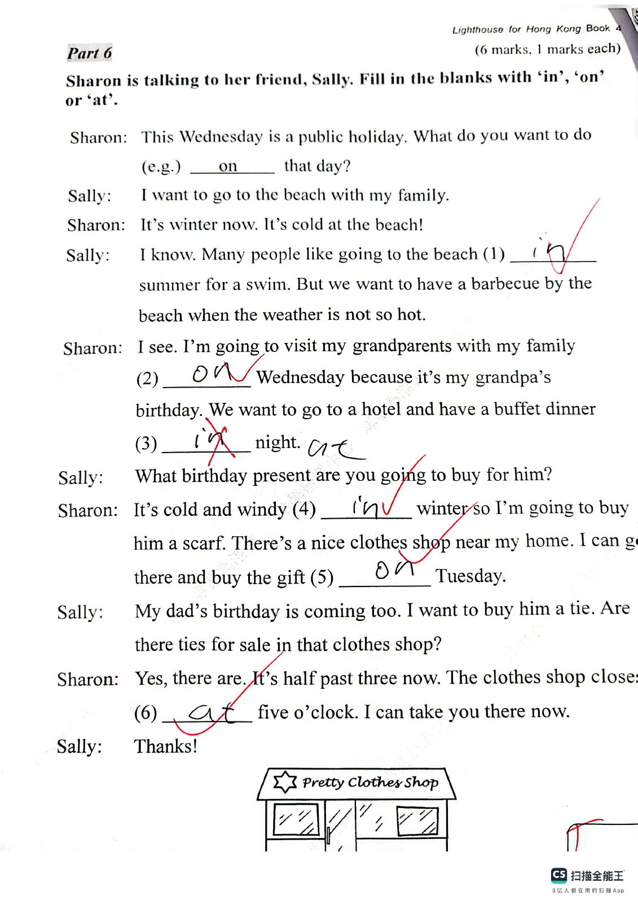
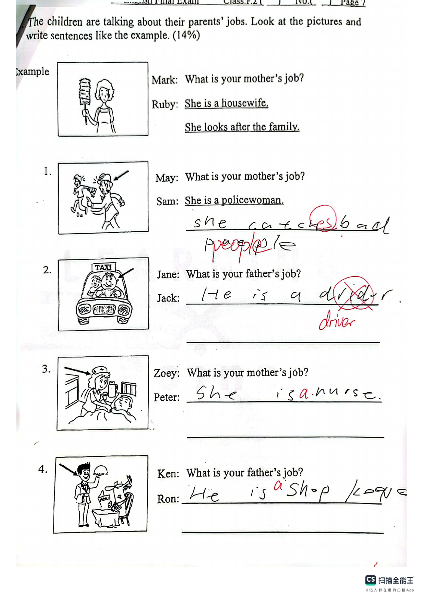

Answer: 10014: 10 Th = 1, Th = 0, H = 0, T = 1, U = 4
已掌握
| # | 单词/词组 | 中文意思 | 例句/说明 | 已掌握 |
|---|---|---|---|---|
| noun 名词 | ||||
| 1 | sign | 标志 | Read the sign carefully. | |
| 2 | monitor | 班长 | The monitor helps the teacher. | |
| 3 | writer | 作家 | The writer writes stories. | |
| 4 | flower | 花 | This flower is red. | |
| 5 | role | 角色 | I have a role in the play. | |
| 6 | shopkeeper | 售货员 | The shopkeeper helped me find a notebook. | |
| verb 动词 | ||||
| 7 | invite | 邀请 | I invite my friend to my home. | |
| 8 | pick | 采摘；挑选 | We pick apples from the tree. | |
| 9 | match | 匹配；比赛 | Please match each word to the correct picture. | |
| 10 | send | 发送 | I will send you a postcard. | |
| 11 | dig | 挖 | The dog can dig a hole. | |
| phrase 短语 | ||||
| 12 | look after | 照顾 | I look after my little sister. | |
| adjective 形容词 | ||||
| 13 | famous | 著名的 | This is a famous place. | |
| 14 | rude | 粗鲁的 | Do not be rude. | |
| 15 | hungry | 饥饿的 | I am hungry now. | |
| 16 | same | 相同的 | We are in the same class. | |
| 17 | correct | 正确 | This answer is correct. | |
| verb phrase 动词短语 | ||||
| 18 | tell a story | 讲故事 | I tell a story to my little brother. | |
| adverb 副词 | ||||
| 19 | often | 经常 | We often play in the park. | |
| uncategorized 未分类 | ||||
| 20 | September | 九月 | School starts in September. | |
| # | 单词/词组 | 中文意思 | 例句/说明 | 已掌握 |
|---|---|---|---|---|
| adjective 形容词 | ||||
| 1 | cuddly | 软乎乎的；让人想抱的 | The toy bear is very cuddly. | |
| 2 | newborn | 新生的 | The newborn baby is small. | |
| 3 | silly | 愚蠢的；傻的 | Billy made a silly mistake. | |
| 4 | rich | 富有的 | Now Billy was rich. | |
| noun 名词 | ||||
| 5 | beach | 海滩 | I want to go to the beach. | |
| 6 | buffet | 自助餐 | We had lunch at a buffet. | |
| 7 | resident | 居民 | He is a resident of this city. | |
| 8 | slide | 滑梯 | The child goes down the slide. | |
| 9 | sculpture | 雕塑 | We saw a stone sculpture in the park. | |
| 10 | knowledge | 知识 | Books give us knowledge. | |
| 11 | lollies | 棒棒糖 | The children bought some lollies. | |
| noun phrase 名词短语 | ||||
| 12 | police dog | 警犬 | The police dog is clever. | |
| 13 | role model | 榜样；模范 | She is a role model for younger students. | |
| 14 | Open Day | 开放日 | Open Day is on 1st March. | |
| 15 | lemon tea | 柠檬茶 | I'd like two cups of lemon tea, please. | |
| 16 | a bowl | 碗 | Put the egg into a bowl. | |
| verb 动词 | ||||
| 17 | reply | 回复 | Please reply to my email. | |
| 18 | collect | 收集 | I collect stamps. | |
| 19 | roll | 转动 | The ball can roll. | |
| phrase 短语 | ||||
| 20 | simple present tense | 一般现在时 | The sentence "I walk to school" is in the simple present tense. | |
| verb phrase 动词短语 | ||||
| 21 | play basketball | 打篮球 | Can you play basketball? Yes, I can. | |
| 22 | be interested in | 对……感兴趣 | I am interested in music. | |
| 23 | take photos | 拍照 | We take photos at the farm. | |
| 24 | reading magazines | 读杂志 | She likes reading magazines. | |
| 25 | sing carols | 唱圣诞颂歌 | We sing carols at Christmas. | |
| 26 | have a birthday party | 举办生日派对 | I want to have a birthday party at home. | |
| 27 | blow out the candles | 吹蜡烛 | I blow out the candles on my birthday cake. | |
| noun/verb 名词/动词 | ||||
| 28 | survey | 调查 | We do a survey in class. | |
| uncategorized 未分类 | ||||
| 29 | shout | 喊 | Please do not shout in the library. | |
| 30 | cartoon | 卡通 | We watched a funny cartoon. | |
| # | 单词/词组 | 中文意思 | 例句/说明 | 已掌握 |
|---|---|---|---|---|
| time/date 时间日期 | ||||
| 1 | March | 三月 | March is the third month. | |
| 2 | June | 六月 | June is the sixth month. | |
| 3 | October | 十月 | October is the tenth month. | |
| 4 | November | 十一月 | November is the eleventh month. | |
| 5 | Friday | 星期五 | Friday is a weekday. | |
| directions 方向 | ||||
| 6 | south | 南 | South is a direction. | |
| numbers 数字 | ||||
| 7 | two | 2 | Two is 2. | |
| 8 | fourteen | 14 | Fourteen is 14. | |
| 9 | sixteen | 16 | Sixteen is 16. | |
| 10 | twenty | 20 | Twenty is 20. | |
| 11 | forty | 40 | Forty is 40. | |
| 12 | seventy | 70 | Seventy is 70. | |
| ordinal numbers 序数 | ||||
| 13 | third | 第三 | This is the third shape. | |
| solid shape 立体图形 | ||||
| 14 | cone | 圆锥 | A cone has one curved face. | |
| plane shape 平面图形 | ||||
| 15 | quadrilateral | 四边形 | A quadrilateral has four sides. | |
| # | 单词/词组 | 中文意思 | 例句/说明 | 已掌握 |
|---|---|---|---|---|
| operations 运算 | ||||
| 1 | be left | 剩下的 | How many apples will be left? | |
| geometry 几何 | ||||
| 2 | angle | 角 | An angle is formed by two rays with the same endpoint. | |
| 3 | acute angle | 锐角 | An acute angle is smaller than a right angle. | |
| 4 | opposite side | 对边 | In a rectangle, the opposite sides are equal. | |
| 5 | identical | 完全相同的 | These two triangles are identical in shape and size. | |
| 6 | parallel to each other | 相互平行 | The two lines are parallel to each other. | |
| shape 形状 | ||||
| 7 | circle | 圈；圆 | Draw a circle around the answer. | |
| answer 答案 | ||||
| 8 | correct | 正确的 | Choose the correct answer. | |
| place value 位值 | ||||
| 9 | tens | 十位 | The digit is in the tens place. | |
| comparison 比较 | ||||
| 10 | less | 更少的；小于 | 8 is less than 10. | |
| 11 | lightest | 最轻的 | The 1 kg bag is the lightest of the 1 kg, 2 kg and 3 kg bags. | |
| position 位置 | ||||
| 12 | back | 后面 | The desk is at the back of the room. | |
| operations calculation 运算 | ||||
| 13 | multiplication | 乘法 | Multiplication can use times. | |
| 14 | subtract A from B | B-A | "Subtract A from B" means B - A. | |
| 15 | equally | 平等地 | Share the apples equally. | |
| 16 | dividend | 被除数 | The dividend is divided by the divisor. | |
| 17 | quotient | 商 | The quotient is the answer in division. | |
| 18 | checking | 验算 | Checking by addition shows that 9 - 4 = 5 is correct: 5 + 4 = 9. | |
| teacher math vocabulary 老师数学词汇 | ||||
| 19 | each | 每个 | Each child has three pencils. | |
| currency money 货币 | ||||
| 20 | dollar | 元 | One dollar has 100 cents. | |
| 21 | cent | 分 | One cent is a small amount of money. | |
| 22 | pay for | 支付 | I pay for the book. | |
| measurement 测量 | ||||
| 23 | measure | 测量 | We measure the length with a ruler. | |
| 24 | distance | 距离 | Find the distance between the two points. | |
| 25 | kilogram | 千克 | One kilogram is 1,000 grams. | |
| 句型结构 | ||||
| 26 | Angle ... is larger than Angle ... | 角......大于角...... | Angle A is larger than Angle B. | |
| 27 | ... is to the east of ... | ......位于......的东侧。 | The school is to the east of the park. | |
| 28 | ... is to the west of ... | ......位于......的西侧。 | The bank is to the west of the school. | |
| plane shape 平面图形 | ||||
| 29 | isosceles trapezium | 等腰梯形 | An isosceles trapezium has two equal legs. | |
| 30 | right-angled trapezium | 直角梯形 | A right-angled trapezium has two right angles. | |


